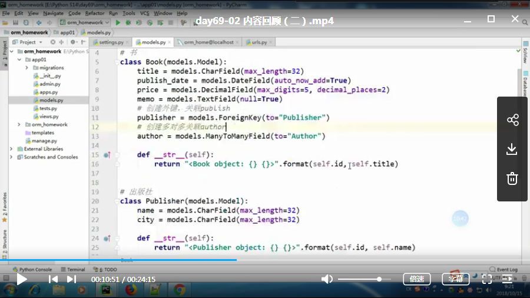
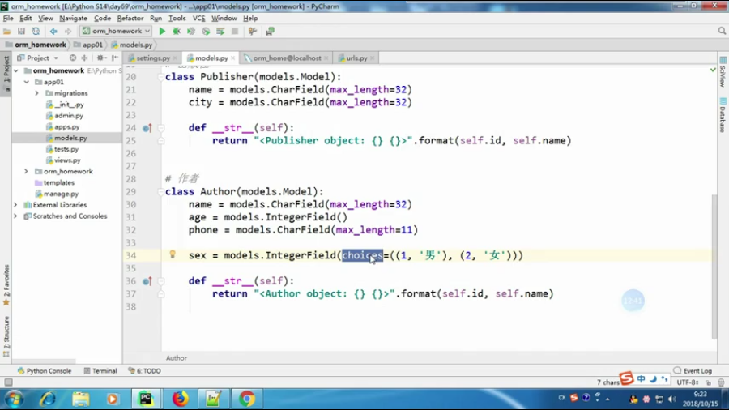
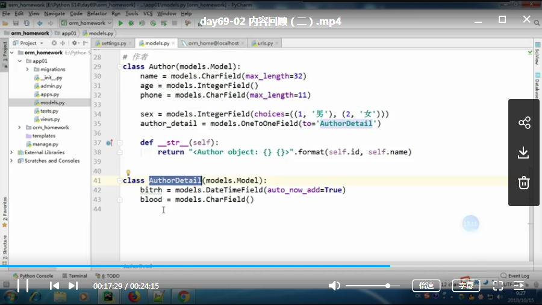
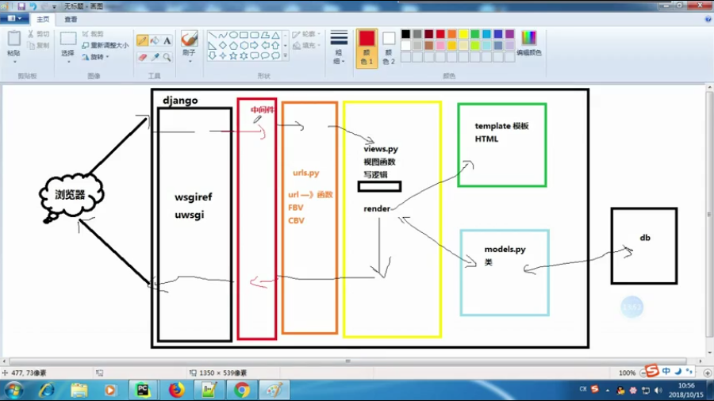
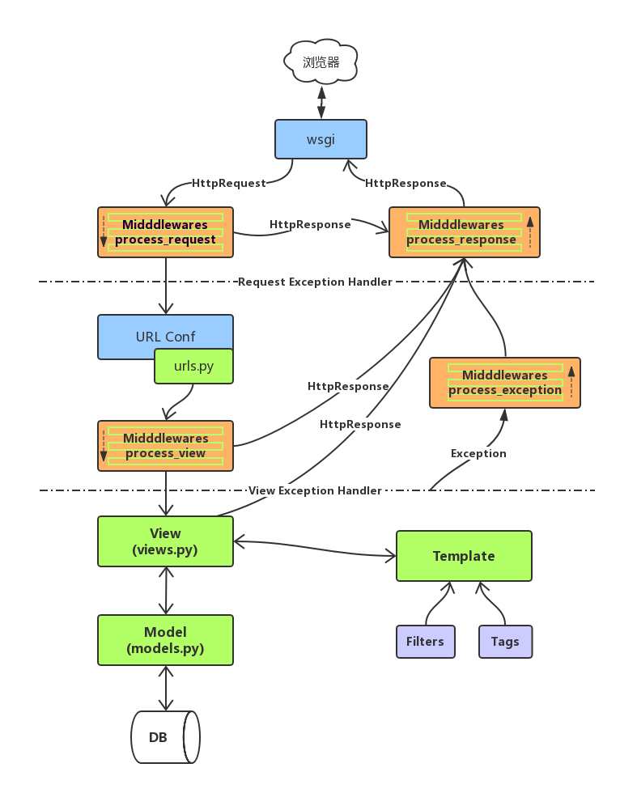

day69-01-内容回顾
中间件地址：
https://www.cnblogs.com/maple-shaw/p/9333824.html
cookie
1：是什么
保存在浏览器的键值对
2：为什么要有cookie
http是无状态的，每次请求都无关联，无法记住状态
3：操作cookie
1:设置cookie
ret = HttpResponse(‘xxx’)
ret.set_cookie(key,value,max_age=5)
2：删除cookie
ret.delete_cookie(key)
4：session
1：是什么
保存在浏览器上的一组键值对
2：为什么要有
cookie存放用户信息在浏览器上不安全
cookie的长度有限
3：操作session
1：设置
request.session[key] = value
request.session.set_default[key] = value
2：获取
request.session[key]
request.session.get(key)
3：删除session
del request.session[key]
request.session.delete() 删除该用户下的所有session，不删除cookie
request.session.flush() 删除该用户下的所有session，同时删除cookie
4：设置超时时间
request.session.set_expiry()
5：清除所有过期的session
request.session.clear_expired()
4：配置
默认session存放的位置
from django.conf import globae_settings
# Whether to save the session data on every request.
SESSION_SAVE_EVERY_REQUEST = False
# Whether a user’s session cookie expires when the Web browser is closed.
SESSION_EXPIRE_AT_BROWSER_CLOSE = False
存放session数据表的文件
from django.contrib.sessions.backends import db
5：ORM
1：返回对象列表
all()
filter()
exclude()
order_by()
reverse()
values() 内部元素是字典
value_list() 内部元素是元祖
distinct()2：返回对象的
get()
first()
last()3：返回是布尔值的
exists()4：单表的双下划线
__gt
__lt
__gte
__lte
__in = []
__range = []
__contains = ""day69-02-内容回顾
表结构设计
图一：

图二：
chioce的使用
第一个是存入数据库的值

拆表：one-to-onefield -不常用的字段放在另一张表中

day69-05-内容回顾三
aggregate 聚合 终止字句
annotate 分组 前面有values的时候，按照values的内容分组
前面没有values的时候，按照数据表model来分组
day69-06-请求生命周期
django中间件的位置
图示：

中间件
1：什么是中间件
处理全局范围请求与相应的钩子
day69-07-中间件值process_request方法
中间件整体的注意事项
参数 执行时间 执行顺序 返回值
process_response
process_template_response
process_request
process_view
process_exception书写中间件
流程
1：书写中间件（继承自 MiddlewareMixin）
2：在settings中应用中间件（）具体的写法
from django.utils.deprecation import MiddlewareMixin
process_request
1：执行时间
在视图函数执行之前
2：参数
request : 和视图中的request参数一致
3：执行顺序
中间件的执行顺序和settings中的执行顺序一致
4：返回值
返回值是None -- normal
返回值是response对象时 -- 直接返回day69-08-中间件值process_response方法
详解
process_response
1：执行时间
在视图函数执行之后
2：参数 request response
request : 和视图中的request参数一致
3：返回值是response
4：执行顺序
按照注册顺序倒序执行day69-09-中间件值process_view方法
无视频
day69-10-中间件值process_exception方法
1：执行时间
在视图函数之后
在process_response之前
有触发条件，有异常才执行
2：参数
错误信息对象
3：返回值
是None，---正常的normal
是response的时候，---注册顺序之前的process_response不在执行
4：按照注册顺序倒序执行
5：返回值day69-11-中间件值process_template_response方法
1：执行时间
触发条件（response有render方法的时候）
2：day69-12-中间件值执行流程梳理
useless
day69-13-work dispatch
day69-14-django请求生命周期完整过程
图示：
